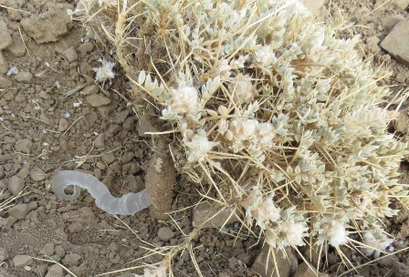
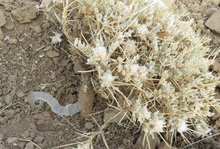
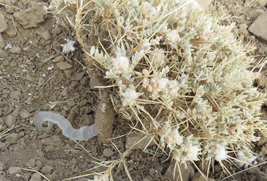

کتیرا چیست؟
کتیرا صمغی طبیعی است که از ریشه گیاه گون در نواحی کوهستانی خشک به دست میآید. به صورت دستی برداشت و زیر آفتاب خشک میشود. این صمغ با ظاهر نواری یا کریستالی برای کاربردهای دارویی، غذایی و آرایشی بسیار ارزشمند است.
 

کتیرا خالص، دارای گواهی آزمایشگاه، بستهبندی حرفهای
کتیرا صمغی طبیعی است که از ریشه گیاه گون در نواحی کوهستانی خشک به دست میآید. به صورت دستی برداشت و زیر آفتاب خشک میشود. این صمغ با ظاهر نواری یا کریستالی برای کاربردهای دارویی، غذایی و آرایشی بسیار ارزشمند است.

ما تنها نوع نواری و خالصترین کتیرا را ارائه میدهیم که با دقت انتخاب شده و از نظر کیفیت آزمایش شده است. پس از خیس شدن به ژلی نرم و پایدار تبدیل میشود.

Used in syrups, herbal pastes, lozenges and tablet coatings as a safe natural stabilizer.
Acts as a clean-label thickener for sauces, ice cream, yogurt, and specialty drinks.
Used in organic gels, hair care and facial creams for texture and stability.

Email: info@sepidartrd.com
شماره تماس: +98 913 972 9771
ارسال ایمیل